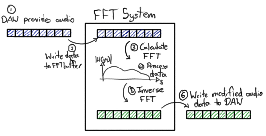

Below is a recording of me playing four guitar chords - no effects are applied
for a baseline comparison.
The next clip uses the diatonic vocoder effect to remove all parts of the sound
that correspond to C, D, and E notes. Notice that some of the notes have vanished,
and that the sound is more muted/missing high-end. Also, the bass note (C) on the
third chord has vanished.
This third clip does the opposite of the second clip - it silences the parts of
the sound that DON'T correspond to the C, D, and E notes. This clip is noticeably
quieter (since most of the sound is filtered out!), but that low C on the third
chord is back!
Just for fun, this is what the effect sounds like when applied to drums. This
example just quickly automates between a few arbitrary chords. Near the end,
you can hear what it sounds like when only a couple note bands are let through.
A common problem that I run into when designing sounds is that the harmonic content
of my sound does not align with whichever composition I'm working on. For example, consider
the following sound:
Sometimes, I would like to delete parts of the signal that correspond to specific notes, so
I built this "diatonic vocoder" effect for that purpose.
FFT Buffer
The main problem to tackle here is the FFT. At a high level, we can view the audio effect
as a system with the following behavior:

// step 1: write incoming audio data to FFT buffer